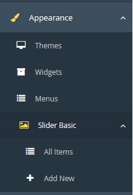
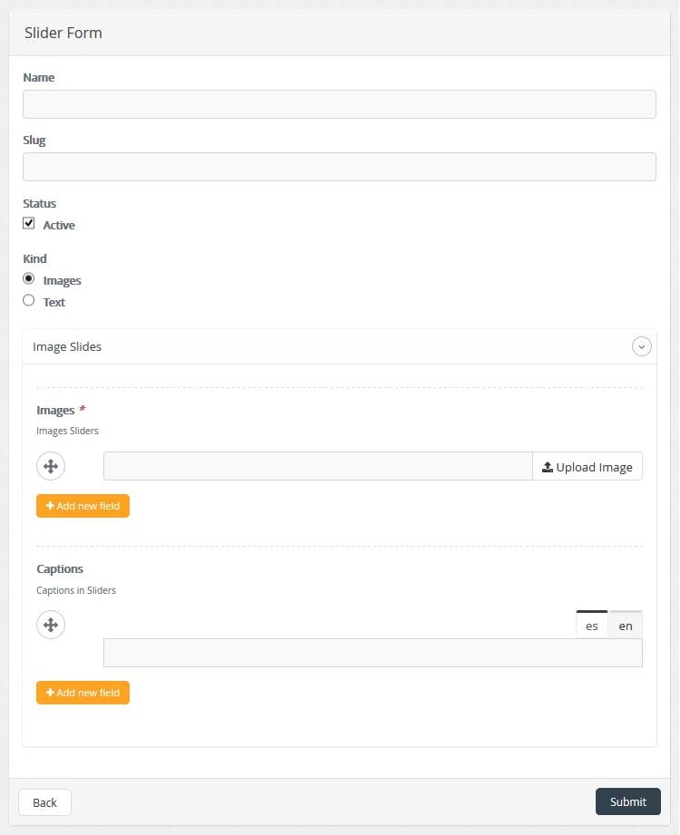
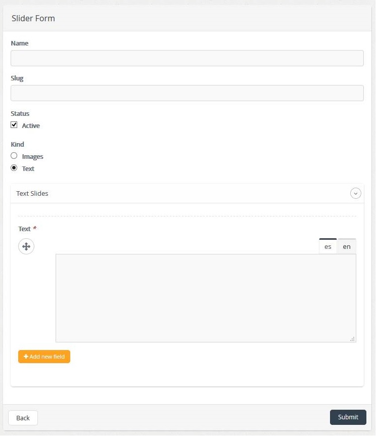
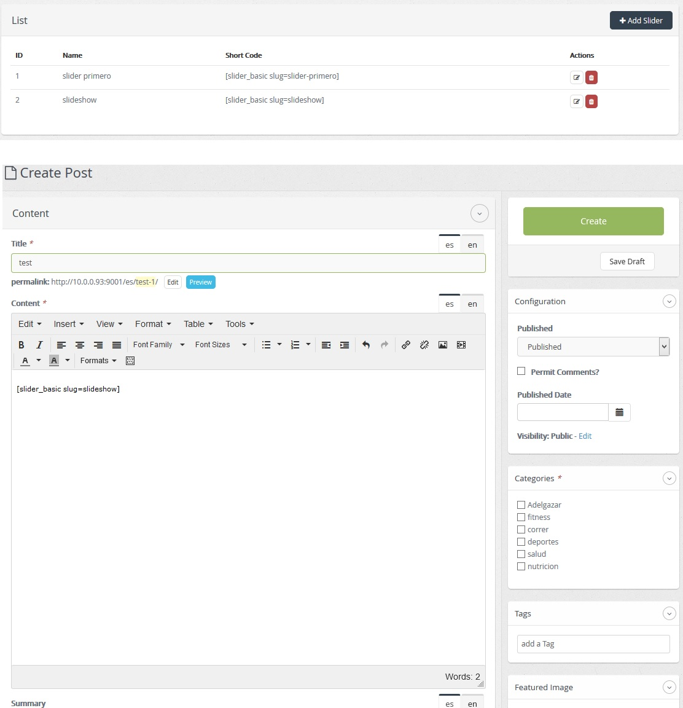

| Description |
|---|
|
Slider Plugin Basic lets you create slides in a very easy way, basic slider can handle two types of slides:
the first is to display images and the second is to display text, these two types of slides can be entered on one form.
Slider Basic display images, such slides can enter images and text "Captions" to the description of the image. Slider Basic display text, such slides can enter text to be displayed in the slideshow. After creating the slides in the list of slides have an attribute with the shortcode name, this attribute it can be copied and pasted into any content of a post, after saving the post we can see the slides basic operation when entering the post from the frontend. |
| Configuration | |
|---|---|
|  | To start using Basic Slider Plugin, first we have to enter in the Appearance menu >> Slider Basic >> Add New, then click on Add New, we see a form to create slides. |
|  |
In the form to create slides have the following fields: Name, Slug, state, type >> Slides and text.
In the first option Slides image, we have the following attributes: Images and captions in images we can upload images of any kind, Captions can enter the description of the image, each of these elements has the facility to enter N items by the button Add new field, and each of these elements can be reordered by the button, then save the form by clicking on the Send button. |
|  | In the second option Slides text, we have the following attributes: text, in this field you can enter any amount of text, this field can be added by N times the button Add new field, you can also rearrange the items added by the button then save the form by clicking on the Send button. |
|  | After creating the slides in the list of slides have an attribute with the shortcode name, this attribute it can be copied and pasted into any content of a post, after saving the post we can see the slides basic operation when entering the post from the frontend. |